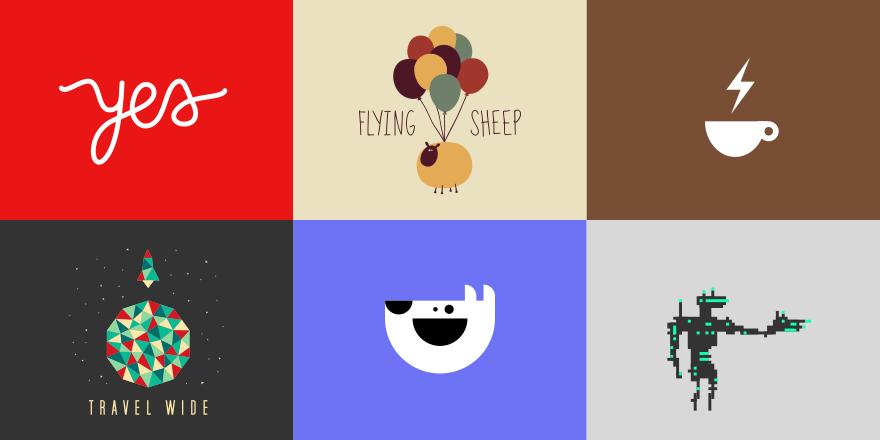

You can find me on Github, Dribbble, Twitter, or email me.
Currently, I'm exploring an idea called semantic animation, a new approach to designing animated interfaces. I co-wrote an article for A List Apart about it.
Read the articleI applied many of the principles of semantic animation to a futuristic interface prototype for ordering food at restaurants. It was designed for a demo on a 60" touch table, but since it's built with web technologies, you can experience it from the comfort of your browser.
Try the prototypeI'm also very interested in designing explanations—especially using visualization and interactivity to make abstract concepts and relationships understandable.
As part of my bachelor thesis I built a data analysis tool that enables fast visual comparisons across large datasets.
Try the prototypeOther interesting things I've built:
Yes We Can—All the Can I Use browser support data, at a glance.
Connection—A small game that brings people together. There's also a PDF version for offline use.
Dynasty—Tool for generating visualizations of succession timelines (e.g. all the roman emperors).
Vignelli—Prototype real-time information system for bus stops, a collaboration with Julian Sparber.
I also do branding, illustration, and other fun visual things from time to time. You can find some of that stuff on Dribbble.
